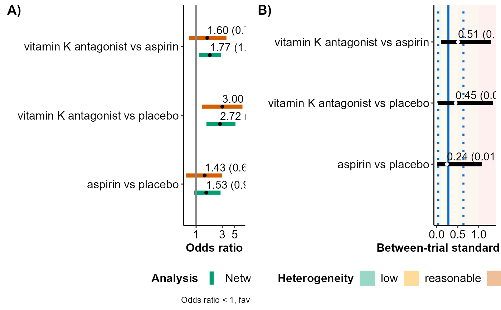

R/series.meta.plot_function.R
series_meta_plot.RdFacilitates the comparison of the consistency model
(via run_model) with a series of pairwise meta-analyses
(via run_series_meta) regarding the estimated summary effect
sizes and between-trial standard deviation for comparisons with at
least two trials.
series_meta_plot(full, meta, drug_names, save_xls)An object of S3 class run_series_meta. See 'Value'
in run_series_meta.
A vector of labels with the name of the interventions in
the order they appear in the argument data of
run_model. If drug_names is not defined,
the order of the interventions as they appear in data is used,
instead.
Logical to indicate whether to export the tabulated results
to an 'xlsx' file (via the write_xlsx
function of the R-package
writexl) at the working
directory of the user. The default is FALSE (do not export).
The R console prints the data-frame with the estimated summary effect
sizes and between-trial standard deviation of comparisons under both
models. The comparisons have at least two trials. In the case of a
fixed-effect model, the data-frame is printed without the results on the
between-trial standard deviation.
Furthermore, series_meta_plot exports the data-frame to an 'xlsx'
file at the working directory of the user.
series_meta_plot returns a panel of two forest plots: (1) a
forest plot on the posterior mean and 95% credible interval of the summary
effect size for the observed comparisons from network meta-analysis and the
corresponding pairwise meta-analyses, and (2) a forest plot on the
posterior median and 95% credible interval of the between-trial standard
deviation for these observed comparisons. The estimated
between-trial standard deviation from network meta-analysis appears as a
rectangle in the forest plot. When a fixed-effect model has been fitted,
only the forest plot on the estimated summary effect sizes is shown.
series_meta_plot can be used only for a network of
interventions. Otherwise, the execution of the function will be stopped and
an error message will be printed on the R console.
The user can detect any inconsistencies in the estimated effects from the compared models and explore the gains in precision stemming from applying network meta-analysis. Furthermore, the user can investigate the plausibility of the common between-trial heterogeneity assumption which is typically considered in network meta-analysis.
data("nma.dogliotti2014")
# Read results from 'run_model' (using the default arguments)
res <- readRDS(system.file('extdata/res_dogliotti.rds', package = 'rnmamod'))
# Read results from 'run_series_meta' (using the default arguments)
meta <- readRDS(system.file('extdata/meta_dogliotti.rds',
package = 'rnmamod'))
# The names of the interventions in the order they appear in the dataset
interv_names <- c("placebo", "aspirin", "aspirin plus clopidogrel",
"dabigatran 110 mg", "dabigatran 150 mg", "rivaroxaban",
"vitamin K antagonist", "apixaban")
# Plot the results from both models
series_meta_plot(full = res,
meta = meta,
drug_names = interv_names)
#> $tabulated_results
#>
#>
#> |Comparison |Mean NMA |SD NMA |95% CrI NMA |Mean MA |SD MA |95% CrI MA |Median tau |SD tau |95% CrI tau |
#> |:-------------------------------|:--------|:------|:-------------|:-------|:-----|:-------------|:----------|:------|:------------|
#> |aspirin vs placebo |1.53 |0.27 |(0.92, 2.71) |1.42 |0.39 |(0.64, 3.03) |0.24 |0.28 |(0.01, 1.05) |
#> |vitamin K antagonist vs placebo |2.71 |0.30 |(1.47, 5.05)* |3.00 |0.41 |(1.30, 6.82)* |0.44 |0.33 |(0.04, 1.32) |
#> |vitamin K antagonist vs aspirin |1.77 |0.23 |(1.13, 2.81)* |1.60 |0.39 |(0.74, 3.60) |0.52 |0.29 |(0.12, 1.28) |
#>
#> $forest_plots

#>